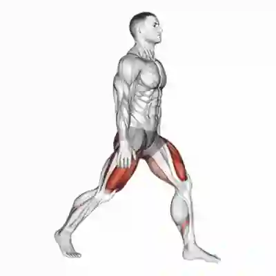

Funcional
Treino Funcional 20 Min
Ideal para fortalecer pernas, core e resistência com movimentos naturais.
- 3 rodadas
- 40 segundos de trabalho / 20 segundos de descanso
- Afundo, agachamento com salto e burpee